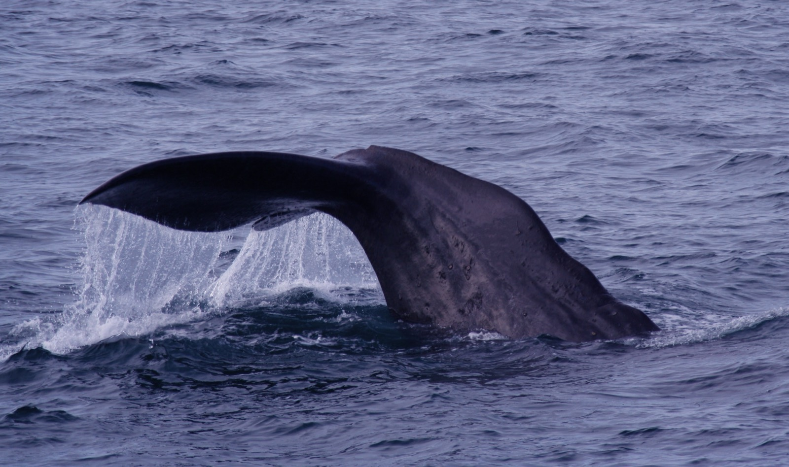
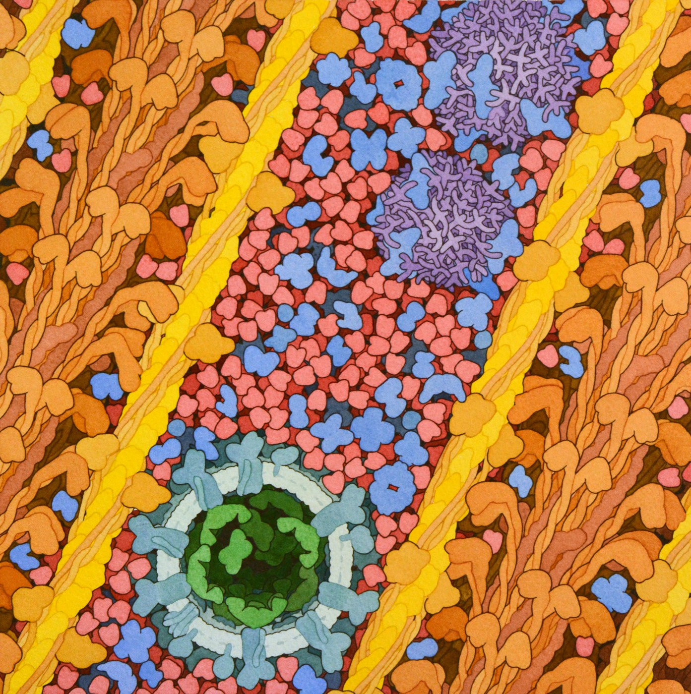
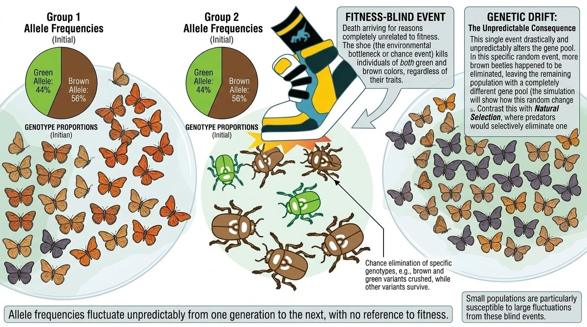
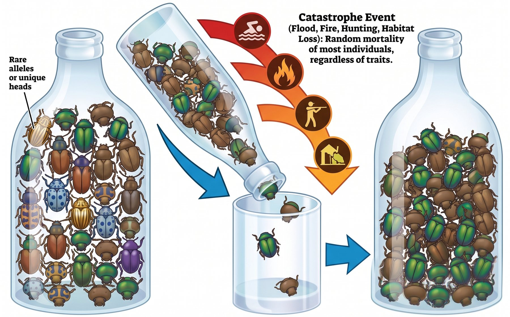
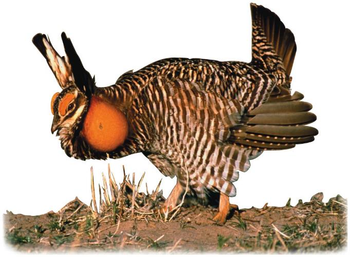
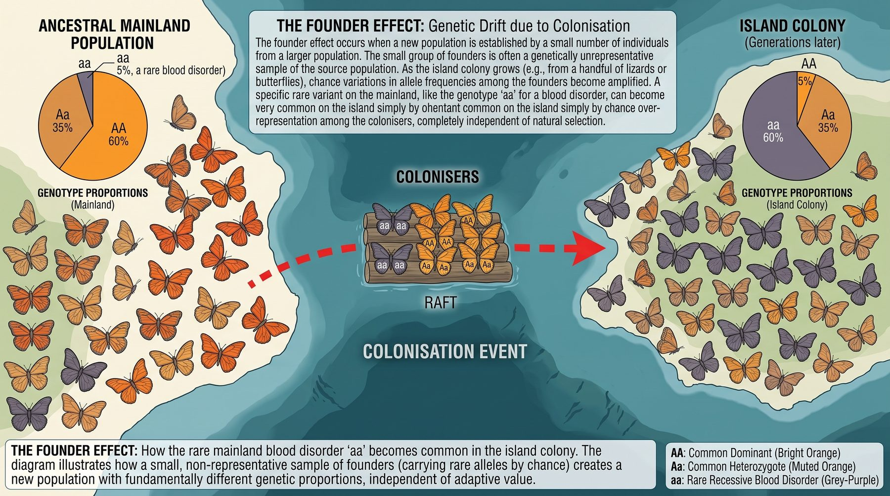

6.4 Adaptation and Speciation
Run natural selection long enough and two things happen. Populations become strikingly well suited to where they live — and eventually one population becomes two that can no longer breed together. This chapter follows the mechanism to both of those consequences.
By the end of this chapter you should be able to
- Explain how natural selection results in adaptation, and analyse the benefit of a given adaptation.
- Define and distinguish convergent and divergent evolution, and adaptive radiation.
- Explain sexual selection, including why it can favour traits that reduce survival.
- Define a species, and explain why the definition is harder to apply than it looks.
- Distinguish prezygotic and postzygotic reproductive barriers, and allopatric from sympatric speciation.
- Explain genetic drift, the bottleneck and founder effects, and gene flow — and how they differ from natural selection.
Where we have got to
So far: populations share ancestors (6.1), natural selection is the process that changes them (6.2), and you can see that change in real data (6.3).
Every one of those was about change within a single population — a beak getting deeper, an allele getting commoner. This chapter follows the same process further, to two bigger results.
- Adaptation — how a population ends up so well suited to where it lives that it can look designed.
- Speciation — how one population becomes two that can no longer breed together.
Keep 6.1's homologous and analogous structures in mind. You learned to tell them apart there; here you meet the two processes that produce them — divergent evolution makes homologous structures, convergent evolution makes analogous ones. Same idea, seen from the other end.
You will also need Unit 4, on reproduction. Speciation is ultimately about reproduction stopping between two groups, so what you know about how organisms reproduce tells you the ways it can fail.
Adaptation and selection pressure
An adaptation is a heritable trait that raises an organism's chance of surviving and reproducing in its environment. A selection pressure is whatever feature of the environment does the selecting — a predator, a drought, a competitor, an antibiotic, a shortage of light.
Adaptations are properties of populations, produced over generations. An individual organism does not adapt during its life. When you write "the population became adapted to…", you are describing a change in which heritable variants were common — never a change made by any individual.
Reading an adaptation backwards
The analytical move this standard asks for is to look at a trait and work out what pressure produced it. Cave-dwelling organisms are the clearest teaching case because the pressures are so few and so obvious.
| Adaptation | Selection pressure | Why it is favoured |
|---|---|---|
| Loss of eyes | Permanent darkness | Eyes are costly to build and maintain and useless without light. Individuals investing less in them had resources for other things, and eyes are also vulnerable to injury |
| Loss of pigment | No light; no visual predators | Pigment costs energy and camouflage is pointless in the dark |
| Elongated antennae, enhanced touch and smell | Navigating and finding food without sight | Individuals better able to sense their surroundings found food and mates more often |
| Slow metabolism | Scarce, unpredictable food | Surviving longer between meals directly raises survival |


Cave animals did not lose their eyes "because they did not need them". Not needing something does not remove it. Eye loss was actively selected for — eyes cost energy and are easily damaged, so individuals that built less eye tissue had a real advantage. Where a structure is merely useless rather than costly, it tends to persist in reduced form as a vestigial structure instead.
Convergent and divergent evolution
Two lineages can become more alike, or less alike. Which one has happened tells you something quite different about their history.
Convergent evolution is the clearest of the two to see, and Australia is the best place on Earth to see it. Australia's mammals were cut off from everyone else's for tens of millions of years, so they had to solve the same set of problems — dig, glide, hunt — starting from a completely different ancestor. Sort the twelve animals below and see what they arrived at.
Sort the mammals: two groups, six ways of making a living
Interactive- Which pair did you find hardest to tell apart? What does that difficulty itself tell you?
- You could place every animal in the correct row just by looking at its body. Why could you not place it in the correct column the same way?
- The mole and the marsupial mole both have spade-shaped digging claws. Are those claws homologous structures or analogous structures? Explain how you know.
- If you found a fossil of an unknown digging mammal in Australia, would its digging claws be good evidence that it was closely related to European moles? Say why not.
| Convergent evolution | Divergent evolution | |
|---|---|---|
| Common ancestor | No recent one | Yes — the lineages share one |
| Direction | Lineages become more alike | Lineages become less alike |
| Cause | Similar selection pressures in similar environments | Different selection pressures after separation |
| Structures produced | Analogous structures | Homologous structures |
| Example | Marsupial and placental wolves; cacti and euphorbias | The tetrapod forelimb becoming an arm, wing, flipper and foreleg |
This connects straight back to 6.1. Convergent evolution is why analogous structures exist and why they are not evidence of ancestry. Divergent evolution is why homologous structures exist and why they are. The two chapters are describing the same phenomenon from opposite ends.
Adaptive radiation
Adaptive radiation is divergent evolution running fast and wide: one ancestral lineage rapidly producing many species, each adapted to a different niche. It happens when a lineage reaches somewhere with many unoccupied niches — a new island chain — or when a mass extinction empties niches that were already there.
Darwin's finches are the standard case: one founding population reaching the Galápagos, then diversifying into species with beaks specialised for seeds, insects, cactus and more. Mammals are a larger one — small, unremarkable animals for over 100 million years, they radiated into whales, bats, elephants and primates after the extinction that removed the non-avian dinosaurs.
Sexual selection
Some traits look impossible to explain by survival. A peacock's train is heavy, conspicuous and makes escape harder. In 6.3 you saw that brightly coloured male guppies are attacked more often by predators. Why has selection not removed these traits?
Because fitness is reproductive success, not survival. Surviving only matters because it gives you the chance to reproduce. A trait that shortens life but substantially raises mating success can be favoured — and that is sexual selection, a form of natural selection in which individuals with certain characteristics are more likely than others to obtain mates.
Case study — self-sacrifice in redback spiders
Male redback spiders somersault onto the female's fangs during mating and are eaten about 65% of the time in the wild. This is the hardest possible test of the idea: how could selection favour behaviour that kills you?
Maydianne Andrade set out to answer that. She tested three separate hypotheses for why being eaten might pay. Watch how she did it, then compare her predictions and findings in the table that follows.
| Hypothesis | Prediction | Finding |
|---|---|---|
| 1. The meal boosts her eggs | Cannibalistic matings produce more or heavier eggs | Not supported. A very slight trend, but not statistically significant |
| 2. It stops her mating again | Females that ate their mate re-mate less often | Supported. Cannibalism reduced the chance of a later mating |
| 3. It buys mating time, and so paternity | Eaten males mate longer and father more eggs | Supported. Cannibalised males mated ~25 min versus ~11 min, fathering an estimated 92% of eggs against 45% |
Notice how the investigation was built: three distinct hypotheses, each making a different prediction, each tested separately. Two survived and one did not. That is what "designing an investigation" means in this course, and it is exactly the skill the Investigating summatives assess.
Now return to the guppies from Station 5. Bright males were attacked more but captured proportionally less often, and they also attract more mates. Write one sentence explaining why bright colouration persists — your sentence must mention both costs and benefits, and it must be about reproduction rather than survival.
What is a species?
A species is usually defined as a group of organisms that can interbreed in nature to produce fertile offspring. It is a workable definition and it fails in interesting ways.
In practice, deciding whether two populations are one species or two is a judgement built from several kinds of evidence — anatomy, behaviour, DNA and breeding records — rather than a single test.
Where the definition struggles:
Fossils. You cannot test whether extinct organisms interbred. Fossil species are defined on anatomy alone.
Asexual organisms. Bacteria do not interbreed at all, so the criterion cannot be applied.
Populations that hybridise. Polar bears and grizzly bears are considered separate species but produce fertile hybrids where their ranges overlap.
This is not a flaw in biology — it is what you should expect if species arise gradually. If one population splits into two over thousands of generations, there must be a long period where they are partway there. A definition with sharp edges cannot describe a process with none.
Reproductive barriers
What keeps two species separate is not preference but reproductive barriers — anything preventing them from producing fertile offspring. They fall into two groups depending on whether they act before or after fertilisation. The table below lists the main ones.
| Type | Barrier | What it means |
|---|---|---|
| Prezygotic barrier before fertilisation |
Temporal | They breed at different times of day or year |
| Habitat | They live in different places and rarely meet | |
| Behavioural | Courtship signals do not match, so mating is not attempted | |
| Mechanical | Reproductive structures are physically incompatible | |
| Gametic | Sperm and egg meet but cannot fuse | |
| Postzygotic barrier after fertilisation |
Hybrid inviability | The hybrid embryo fails to develop or dies early |
| Hybrid sterility | The hybrid lives but cannot reproduce — a mule | |
| Hybrid breakdown | First-generation hybrids are fertile, but their offspring are weak or sterile |
Prezygotic barriers are, in evolutionary terms, cheaper. A postzygotic barrier means gametes, energy and often a whole breeding season are wasted on offspring that cannot reproduce. Any variant that avoids the mating in the first place is therefore favoured — which is why prezygotic barriers tend to strengthen once two populations begin to separate.
How one species becomes two
Speciation needs one thing above all: gene flow between the two groups has to stop. While alleles keep moving between them, the populations are continually remixed and cannot diverge. Cut the flow, and selection and drift act on each group independently until the differences are enough to keep them apart permanently.
Allopatric speciation
Allopatric speciation begins with geography. A river changes course, a mountain range rises, sea level cuts an island off, or a few individuals cross to somewhere new. The two groups are now physically separated, so gene flow stops.
Each population then experiences different conditions, accumulates different mutations, and drifts independently. If they meet again later and reproductive barriers have arisen, they are two species.
Sympatric speciation
Sympatric speciation happens without any physical barrier. Something else stops the groups interbreeding while they live in the same place — a shift in host plant, in breeding season, or in habitat preference.
![On the left, a hawthorn branch with clusters of small red berries, several flies resting on them, labelled Hawthorn flies. On the right, a branch of large red apples with flies on them, labelled Apple flies. The flies on both sides are identical. A broken arrow between them is labelled gene flow — greatly reduced, and a looping arrow on each side is labelled mate on their own fruit. Along the bottom, a ripening-time bar from July to October shows the Apples band starting and ending earlier than the Hawthorns band, with only a short overlap.](../images/u6/image111.jpeg)
The apple maggot fly is the classic case, and it is happening now. The flies originally bred only on hawthorn fruit. When apples were introduced to North America, some flies began using apples instead. Because these flies mate on the fruit they feed on, an apple fly almost always mates with another apple fly.
Apples ripen earlier than hawthorns, so the two groups also now breed at slightly different times — a temporal barrier stacked on top of a habitat one. Gene flow between them has dropped sharply, and measurable genetic differences have accumulated. They are not yet two species. They are visibly on the way.
This is the best answer to "nobody has ever seen a new species form". Speciation is not an event you catch happening — it is a process, and we can observe populations at every stage of it. The apple flies are a snapshot from the middle.
Change without selection
Natural selection is not the only thing that changes allele frequencies. The unit's "five fingers of evolution" gathers the mechanisms together: natural selection, genetic drift, gene flow, mutation, and non-random mating.
Genetic drift
Genetic drift is change in allele frequency due to chance alone. Which individuals happen to reproduce, and which alleles happen to end up in which gametes, is partly luck — and luck does not average out in a small population.

Drift is hard to picture from a diagram, because the whole point is that it is unpredictable — one drawing can only ever show one thing that happened to occur. So run it yourself instead.
Drift in eight identical populations
InteractiveEvery population starts at 50%, and the allele is neither useful nor harmful. Work through these:
- Set the population to 10 individuals and run it. How many generations before the first population loses the allele completely? What happens to that line afterwards?
- Reset, set 1000 individuals, run it again. Describe the difference in one sentence. Why does population size matter so much?
- Reset to 1000, run about 30 generations, then press Bottleneck now. What happens to the spread between the populations — and does it recover when the size goes back up?
- The allele is neither good nor bad. So explain, in your own words, why some populations end at 100% and others at 0%.
The single most important difference: selection is directional and predictable; drift is neither. Selection reliably increases advantageous alleles. Drift can increase or remove any allele — including harmful ones — purely by chance. And drift's effects grow as populations get smaller, which is why it matters most exactly when a species is in trouble.
The bottleneck effect
A catastrophe — flood, fire, hunting, habitat loss — kills a large fraction of a population regardless of fitness. The survivors carry only a sample of the original variation, and rare alleles may be lost entirely.

Run it for yourself below. Each colour is one version of a gene, and none of them is better or worse than another.
Squeeze a population through a bottleneck
InteractiveEach colour is a different version of one gene. None of them is better or worse — they are only labels. Whether an individual fits through the neck depends on where it happens to be, not on what it carries.
- Run it on moderate. Which version disappears most often, and why is it always that one?
- Reset and run the same setting several times. Do you get the same survivors each time? What does that tell you about the difference between drift and selection?
- Now press Let the survivors breed. Numbers climb back to 260. Has the variation come back? Explain what would have to happen for it to return.
- Set the catastrophe to very severe. What happens to the rare version almost every time — and what does that mean for a species already down to a few hundred individuals?

Even if numbers recover, the lost variation does not come back quickly — new variation only arrives through mutation. That is why a bottleneck leaves a population vulnerable long after it looks healthy again.
The founder effect
A few individuals leave and colonise somewhere new. They carry only a sample of the parent population's alleles, so the new population starts out genetically unrepresentative — and any allele that happened to be common among the founders may become common in a way that has nothing to do with advantage.

Gene flow
Gene flow is the movement of alleles between populations when individuals or gametes migrate and breed. It makes populations more genetically similar to one another.
Picture two ponds of fish joined by a narrow stream. Every fish that swims across and breeds on the other side carries its alleles with it. The two ponds keep swapping alleles, so they stay alike. Block the stream and they will slowly start to differ.
Gene flow is the direct opponent of speciation. Everything in the section above about speciation depends on gene flow stopping. Gene flow can also rescue a small population by introducing variation it has lost — which is why conservation programmes sometimes move a handful of animals between reserves.
Name the mechanism
Four mechanisms, and they are easy to mix up because several of them change a population without any organism being better or worse at anything. Work through these before you move on. Answer from memory first — scrolling back up to check costs you the practice.
A wildfire burns through a forest and kills about 90% of a snail population. Striped snails, plain snails, fast and slow ones all died in roughly equal proportions. The few survivors happen to carry almost none of the rare yellow-shell allele. Which mechanism is this?
A bottleneck is a large population cut down sharply by an event that ignores fitness. The survivors are a small, random sample of the original variation, so rare alleles are easily lost — and they do not come back when numbers recover.
Farming cut a greater prairie chicken population from many thousands of birds to a few dozen. The survivors were not better at anything — they simply happened to be on the patches of grassland that were left. Numbers have since climbed again, but many of the gene versions the population once held are gone. Which mechanism is this?
Numbers recover far faster than variation does. Every bird alive now descends from the few dozen that came through, so the population holds only what that handful happened to carry — and the versions lost return only by mutation, which is slow. That is why hatching success stayed poor long after the count looked healthy.
Twelve lizards are washed out to an empty island on a raft of branches and breed there. Two hundred years later a blood disorder that is rare on the mainland is common on the island. Which mechanism best explains this?
Twelve lizards carry only a small sample of the mainland's alleles. If one or two of them happened to carry the disorder, its frequency in the new population starts far higher than it ever was on the mainland — and stays high. That is the founder effect.
A flood sweeps eight snails out of a large riverside population and into an isolated pond, where they breed. Generations later, a shell pattern that is uncommon along the river is carried by most of the pond's snails, although it does nothing for them there. Which mechanism best explains this?
Eight snails can only carry a fraction of what a large river population holds, and whatever they happen to carry becomes the entire starting point. So a frequency that was low in the source can be high in the new population from its very first generation, with no advantage involved anywhere.
A motorway is built straight through a meadow, splitting a butterfly population into two halves. For years afterwards, no butterflies cross. Which process has been stopped, and what follows from that?
Gene flow is what kept the two halves alike. With it stopped, mutation, drift and selection all carry on separately in each half, and the differences build up. This is the first step of allopatric speciation — and it is why habitat fragmentation worries conservationists.
Two ponds of the same fish have been cut off from each other for decades and have grown noticeably different, with one pond now short of variation. A channel is dug between them and fish start moving freely in both directions. What follows?
Gene flow is the direct opponent of divergence, and it works in both directions — cut it and populations drift apart, restore it and they are pulled back together. The alleles arriving are ordinary ones from next door, but to a population that has lost variation they are new, which is why conservation programmes move a handful of animals between reserves.
On island A, birds arrive and eat every green beetle they can spot; 50 generations later every beetle is brown. On island B no birds arrive, the beetle population is only about 20 strong, and 50 generations later those beetles are all brown too. Which conclusion is correct?
This is the confusion to watch for. Two populations, identical data, different mechanisms. On island A colour caused the difference in survival. On island B it did not. Always ask what decided who reproduced, rather than reading the answer off the change itself.
Two mouse populations live on separate hillsides, and after 40 generations both are almost entirely pale. On hillside A, owls hunt over pale sand and take dark mice far more often. On hillside B there are no owls, and the population has never risen above about 15 mice. Which conclusion is correct?
Ask what decided which individuals reproduced. A pressure acting on a heritable trait is selection; luck acting on a handful of individuals is drift. Either can produce the same graph, so the graph on its own can never tell you which one you are looking at.
Why does genetic drift change a small population far more than a large one?
With 10 individuals, one unlucky death can move an allele frequency by 10% in a single generation. With 1000, the same death moves it by 0.1%. That is exactly what you saw in the simulation above, and it is why drift matters most when a species is already in trouble.
In the simulation above, eight populations of 1000 are all still close to 50% after many generations, while eight populations of 10 have mostly reached 0% or 100% already. The allele is neither useful nor harmful in either run. What accounts for the difference?
Drift is not switched off in a large population — it is slowed down. Each generation still shifts the frequency at random, but by a tiny amount, so wandering all the way to 0% or 100% takes an enormous number of generations. In a population of 10, two unlucky deaths can finish the job.
Where this leaves us
The answer to 6.3's question is yes. Nothing new was needed — the same four-step process, given enough generations, produces adaptations detailed enough to fool a predator. And once gene flow between two groups stops, the process runs separately in each until they can no longer breed together.
You also picked up something important: selection is not the only thing that changes a population. Genetic drift changes allele frequencies by chance alone, and gene flow keeps populations similar. A complete explanation has to consider all three.
Look back at how often the environment did the deciding. The drought chose deep beaks. Darkness chose blind cave fish. Poachers chose tuskless elephants. In every case the environment set the terms and the population answered.
So the last question of the unit is the one that matters most right now: what happens when the environment changes? 6.5 takes it on — including the changes we are causing ourselves.
Check your understanding
Two parts. The quick check marks itself and points you back to anything shaky. The written questions after it are the harder practice, because explaining in your own words is what the summatives ask for.
Quick check
Why is it wrong to say "the cave fish adapted to the darkness during its life"?
An individual cannot adapt. What changed was which heritable variants were common in the population, across many generations. Watch for this wording in your own writing — it is the easiest mark to lose.
A student writes that a cave salamander "lost its pigment over its lifetime as it got used to living in the dark". Which correction matters most?
"Got used to" describes something happening inside one animal, so it can never describe adaptation. What a population does over generations is change which heritable variants are common in it — no individual body remodels itself to suit where it lives.
Marsupial and placental wolves look strikingly alike but are only distantly related. What is this?
Similar selection pressures in similar niches produced similar body forms in two separate lineages. This is why analogous structures are not evidence of ancestry — and it connects straight back to 6.1.
A bat's wing, a whale's flipper and a horse's foreleg do completely different jobs, yet each is built from the same set of bones inherited from a shared ancestor. What is this?
Divergent evolution takes one inherited structure and pushes it in different directions as the lineages meet different pressures. The shared plan underneath is what makes these limbs homologous, and it is why they are evidence of common ancestry — the exact opposite of the marsupial and placental wolves.
Male redback spiders are usually eaten by their mates. How can selection favour that?
Fitness is reproductive success, not survival. Cannibalised males mated about 25 minutes against 11, fathering an estimated 92% of the eggs against 45%. A male that survives but mates briefly leaves fewer offspring.
A peacock's train is heavy, conspicuous and makes escaping a predator harder. Why has selection not removed it?
Sexual selection is natural selection with fitness measured properly. Offspring are what count, and survival matters only because it buys the chance to produce them — so a trait that shortens life while multiplying matings can still win. The bright guppy males of 6.3 are the same trade in a different animal.
A mule is the offspring of a horse and a donkey, and is sterile. What kind of barrier is this?
The barrier acts after fertilisation, so it is postzygotic. Note the cost: gametes and a whole breeding season were spent on offspring that cannot reproduce, which is why prezygotic barriers tend to strengthen over time.
Two frog species breed in the same pond. One calls and spawns in early spring; the other does not begin until midsummer, by which time the first has finished. What kind of barrier is this?
Barriers are sorted by when they act, not by how solid they look. Anything that stops sperm meeting egg is prezygotic, and this is the cheap kind of separation — neither species spends gametes or a breeding season on offspring that could not reproduce.
Apple and hawthorn flies live in the same orchards with no physical barrier. How can they be separating into two species?
A habitat barrier and a temporal barrier stacked together, both prezygotic. Gene flow has dropped sharply and genetic differences have accumulated — speciation caught in the middle.
A river changes course and cuts a population of ground squirrels into two groups that never meet again. Fifty thousand years later the groups are brought back into contact and no longer interbreed. Which account is correct?
Geography does not do the separating itself; it only cuts the flow of alleles. What follows — different mutations, different pressures, drift in each group — is what builds the barriers, and meeting again is the test of whether enough of them arrived.
A storm kills most of an island beetle population at random, and the survivors happen to be brown. Is this natural selection?
Survival had nothing to do with colour. The outcome looks identical to selection in the data, which is exactly why you must examine the cause rather than only the change.
Decades of poaching for ivory leave an elephant population far smaller than it was, and a much higher proportion of the survivors are tuskless. Is this genetic drift?
Drift and selection are told apart by cause, not by how dramatic the losses were. Poachers removed elephants for a heritable trait, so the change was directional and predictable — the signature of selection. A bottleneck would have taken the tusked and tuskless alike.
Explain it yourself
Write your answer before opening the response. Comparing what you wrote with a full answer is where most of the learning happens.
Explain why cave fish lost their eyes, without using the phrase "they didn't need them".
Ancestral fish entering caves varied in how much they invested in eye development, and that variation was heritable. In permanent darkness, eyes provide no benefit but still carry real costs — they are metabolically expensive to build and maintain, and they are delicate tissue easily damaged in a rocky environment.
Individuals that developed reduced eyes therefore had energy available for other things and were less prone to injury and infection. They survived and reproduced slightly more, so alleles for reduced eyes increased in frequency over generations until the population had lost functional eyes.
The key point is that this was active selection against eyes, not the passive absence of a reason to keep them. Traits that are useless but cost nothing tend to persist as vestigial structures rather than disappearing.
Two island populations of the same beetle both lose their green colouration over 50 generations. On island A this happened because green beetles were eaten by newly arrived birds. On island B a storm killed most of the population and the survivors happened to be brown. Are both natural selection?
No. Island A is natural selection. There was heritable variation, a selection pressure (bird predation), and survival depended systematically on the trait — green beetles were eaten because they were green. The outcome was predictable from the pressure.
Island B is genetic drift, specifically a bottleneck. The storm killed beetles without regard to colour; the survivors were brown by chance. Colour played no causal role. If the storm had struck a moment earlier the survivors might have been green, and the population would have gone the other way.
The outcomes look identical in the data — both populations lost green — which is precisely why you must examine the cause and not just the change. Island B's population is also now less genetically diverse and so less able to respond to future change.
Apple and hawthorn flies live in the same orchards with no physical barrier between them. Explain how they could still be separating into two species.
This is sympatric speciation, and it works because gene flow has been reduced without geography doing the work.
Two barriers act together. The flies mate on the fruit they feed on, so an apple fly overwhelmingly encounters and mates with other apple flies — a habitat barrier. And apples ripen earlier than hawthorns, so the two groups breed at slightly different times — a temporal barrier. Both are prezygotic.
With gene flow sharply reduced, each group accumulates its own mutations and experiences selection for its own host — different ripening times, different fruit chemistry. Genetic differences have already been measured between them. They can still interbreed, so they are not yet two species; they are partway through the process.
Male redback spiders are eaten by their mates about 65% of the time. Explain how a behaviour that usually kills the individual can be favoured by selection.
Because fitness is measured in surviving offspring, not in lifespan. Selection favours whatever puts most copies of an allele into the next generation, and survival matters only as a means to that.
Andrade's data show self-sacrifice pays twice. Cannibalised males mate far longer — a median of about 25 minutes against 11 — and longer mating means more of the female's eggs are fertilised by that male, an estimated 92% against 45%. Being eaten also reduces the chance the female mates again, protecting his paternity further.
So a male that survives and mates briefly may father fewer offspring than one that is eaten. The allele for self-sacrificial behaviour therefore spreads even though its carriers die, because it is more successful at getting itself copied. Hypothesis 1 — that the meal improves her eggs — was tested and not supported, which is worth stating: the explanation is about paternity, not nutrition.